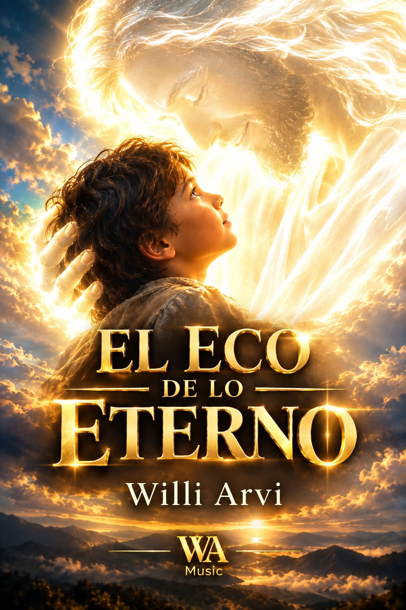
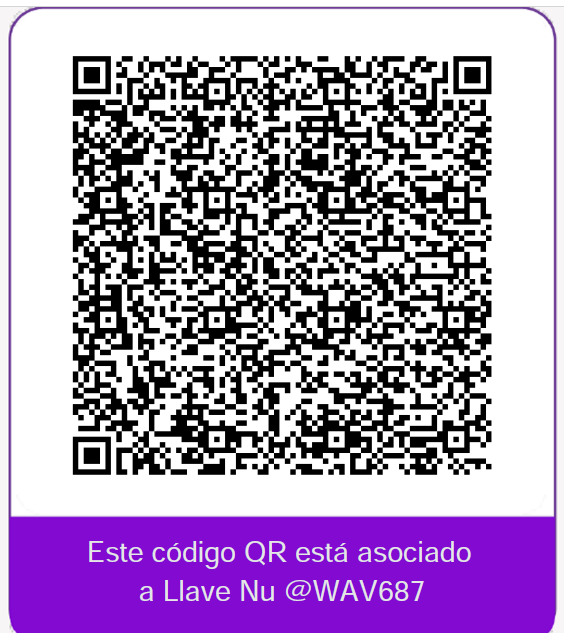
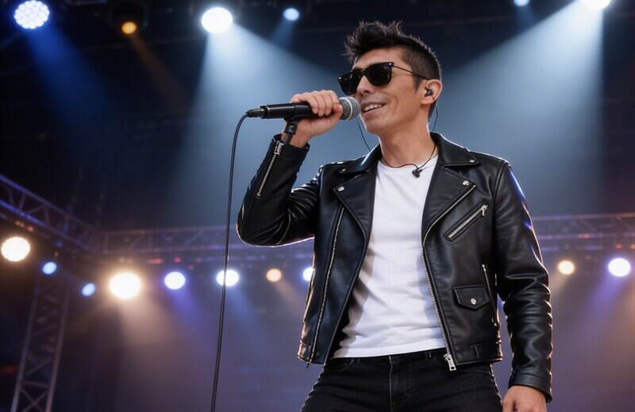

WILLI ARVI MUSIC
Artista, cantante, compositor, productor musical, escritor y conferencista. Creando experiencias únicas a través del arte y el corazón.

Artista, cantante, compositor, productor musical, escritor y conferencista. Creando experiencias únicas a través del arte y el corazón.

El viaje donde descubrirás que la voz que buscas siempre ha estado dentro de ti.
¿Alguna vez has sentido que no encajas? ¿Que hay algo en ti que el mundo no termina de entender? ¿Que a pesar de todo lo que has logrado, hay un vacío que nada llena?
Este no es un libro religioso. Es una bitácora. Un mapa. Una carta de amor para el niño que fuiste y que el mundo intentó apagar con sus tijeras de mentiras.
A través de sus páginas, Willi Arvi te toma de la mano y te guía por un viaje profundo y transformador:
Arrancarás de raíz los cuatro ruidos que han ahogado tu esencia: la cultura que te moldeó sin permiso, los traumas que te encadenaron al pasado, el legalismo que secó tu espíritu y el auto-juicio que te condena con tu propia voz.
Descubrirás los tres pisos de tu ser (espíritu, alma y cuerpo), los cuatro temperamentos biológicos que Dios puso en ti, y entenderás que tu neurodivergencia no es un error, sino un diseño único y maravilloso.
Aprenderás a alinear tu Eje Vertical (la antena que te conecta con el Eco de lo Eterno) y tu Eje Horizontal (el suelo donde pisas, amas y sirves), para que el cielo toque la tierra en tu día a día.
Volverás a la quietud, al silencio, a la fe que no depende de las emociones, y aprenderás a discernir entre la voz de Papá, la tuya propia y el engaño.
Transformarás tus limitaciones en plataformas, recuperarás tu tiempo y tu mente, y te pondrás la armadura que te permite vivir a cara descubierta, sin máscaras, sin miedos, sin cadenas.
Willi Arvi no escribe desde un pedestal. Escribe desde el valle de sombra de muerte. Desde los hospitales, la depresión, el autismo no diagnosticado, las altas capacidades, los fracasos y las pérdidas. Su voz no es la de un maestro distante, sino la de un hermano que ha caminado contigo paso a paso. Sus heridas no son cicatrices de gloria; son puentes de conexión.
Este libro es tu martillo. Tu machete. Tu explosivo.
No vengo a decirte cómo debes vivir. Vengo a tomarte de la mano para que juntos derribemos los muros que te impiden ser quien realmente eres. Vamos a silenciar los ruidos. Vamos a romper las máscaras hasta hacerlas añicos. Vamos a conocer tu fábrica por dentro. Y sobre todo, vamos a aprender a escuchar esa voz que siempre ha estado dentro de ti, pero que el mundo y sus sistemas han ahogado con ruido.
Porque el día que Dios sopló aliento de vida sobre el polvo, no fue un simple viento. Fue un aliento que se quedó dentro. Por eso, cuando te aquietas y callas los ruidos, no sientes que algo llega de afuera. Sientes que algo despierta dentro de ti.
Ese algo es Él. Siempre ha sido Él.
El Eco de lo Eterno está en ti. Y cuando el ruido empieza a callar, el Eco comienza a sonar.
También disponible en:

Willi ArVi - Single 2024
Cada canción es posible gracias a quienes creen en este proyecto. Si quieres apoyar mi trabajo, puedes hacerlo a través de cualquiera de estos medios. ¡Gracias por ser parte! 💛
Transferencia local desde Colombia.

Toca el QR para ampliarlo y escanearlo.
El Eco de lo Eterno es un podcast para los que sienten que no encajan. Para los que están cansados de vivir con máscaras, de ahogar sus preguntas y de buscar afuera una voz que siempre ha estado dentro.
Aquí hablamos de autoconocimiento, fe real, neurodiversidad, sanidad interior y libertad. Sin fórmulas religiosas, sin juicios, sin ruido. Solo conversaciones honestas y reflexiones que te ayudarán a silenciar lo que te ata y a escuchar ese Eco que nunca se ha ido.
Con Willi Arvi. Nuevos episodios.
Porque cuando el ruido empieza a callar, el Eco comienza a sonar.

No son conciertos religiosos. No son espectáculos. Son encuentros reales, físicos, palpables, donde la presencia de Dios se manifiesta en vivo y en directo. Donde el alma se sana, el cuerpo se restaura, los dones espirituales despiertan y el Espíritu Santo llena cada rincón del ser.
En cada presentación, Willi Arvi no solo canta. Ministra. Lleva a la audiencia a un viaje que va desde la conciencia de ser libre hasta la intimidad más profunda con Papá. Sin religiosidad. Sin fórmulas. Sin máscaras. Solo un encuentro auténtico donde el poder de Dios se mueve y transforma.
Willi Arvi no sube al escenario a actuar. Sube a ministrar. Su voz no es la de un artista distante, sino la de un hermano que ha caminado el mismo valle y que te invita a experimentar el poder de Dios en vivo, en directo, en tu propio cuerpo y en tu propia alma.
Contratar un ConciertoNo son charlas motivacionales. No son sermones. Son encuentros para bajar el ruido, mirar hacia adentro y redescubrir la voz que siempre ha estado en ti.
A partir de la sabiduría de El Eco de lo Eterno, Willi Arvi ofrece conferencias y talleres que combinan autoconocimiento, fe real, neurodiversidad y sanidad interior. Dirigidas a universidades, colegios, empresas, iglesias, centros comunitarios y eventos culturales que quieran ir más allá de lo superficial.
Cada conferencia se adapta al contexto y a la audiencia. Pueden ser charlas únicas, talleres vivenciales o ciclos de varios encuentros.
Willi Arvi no habla desde un pedestal. Habla desde el valle de sombra de muerte. Desde los hospitales, la depresión, el autismo no diagnosticado, las altas capacidades, los fracasos y las pérdidas. Su voz no es la de un maestro distante, sino la de un hermano que ha caminado el mismo camino.
Contratar una ConferenciaSon espacios para encontrarnos. Para bajar el ruido. Para compartir lo que somos, sin máscaras, sin juicios, sin protocolos.
Aquí no vienes a conocer a un autor. Vienes a encontrarte con hermanos que están caminando el mismo sendero. Vienes a escuchar, a ser escuchado, a llorar si hace falta, a reír sin permiso, a compartir un café y una conversación que te recuerde que no estás solo.
Willi Arvi no organiza estos encuentros para ser el centro. Los organiza para que tú puedas encontrar tu centro. Para que juntos, como comunidad, recordemos que el Eco de lo Eterno está en cada uno de nosotros.
Traer un Encuentro a mi CiudadLibro, merchandising oficial y ediciones coleccionistas. Cada producto con envío a toda Colombia.
Completa el formulario de contrataciones y me pondré en contacto contigo para coordinar todos los detalles de tu evento.
Ir al Formulario de Contrataciones